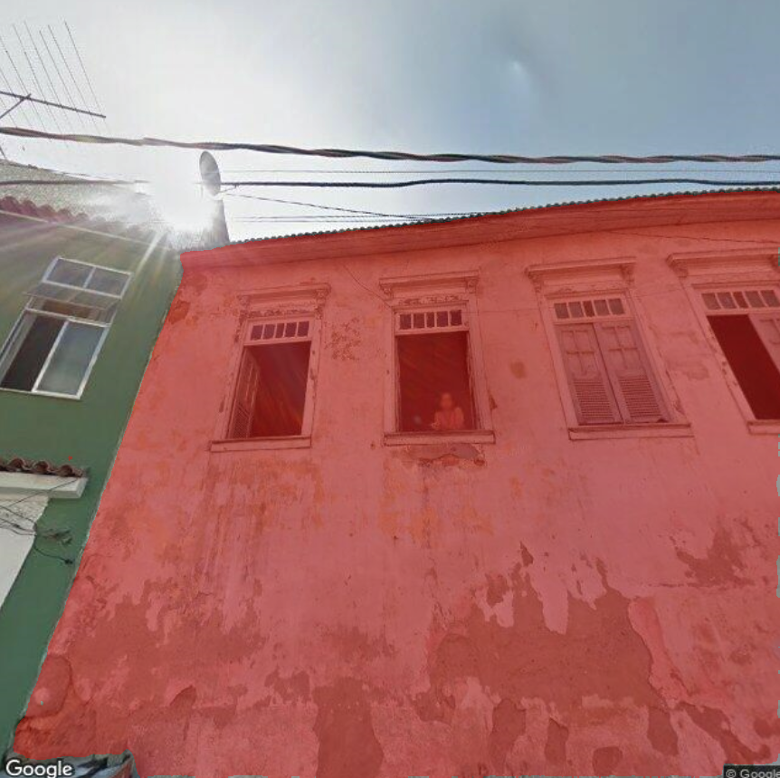
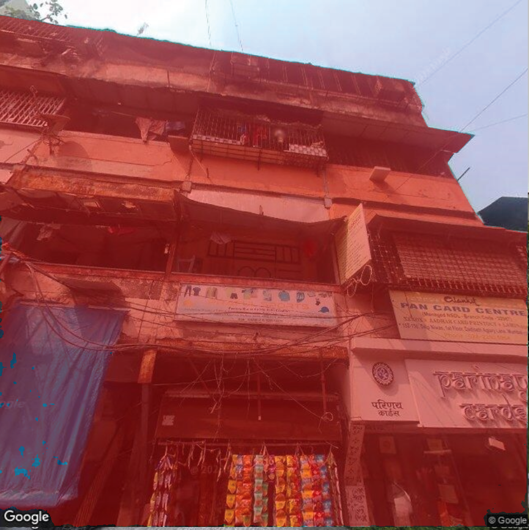
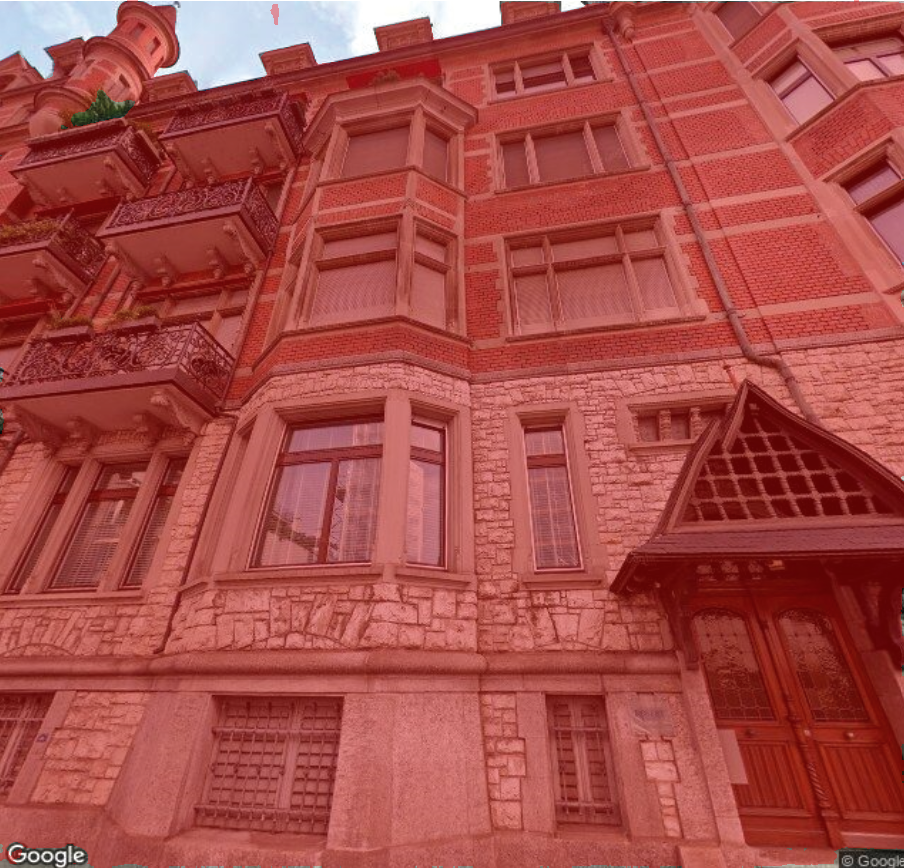
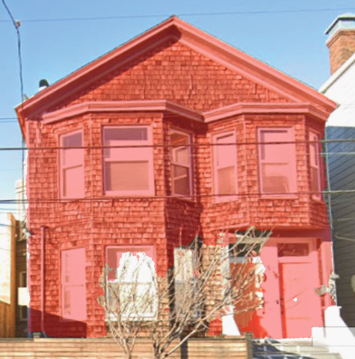
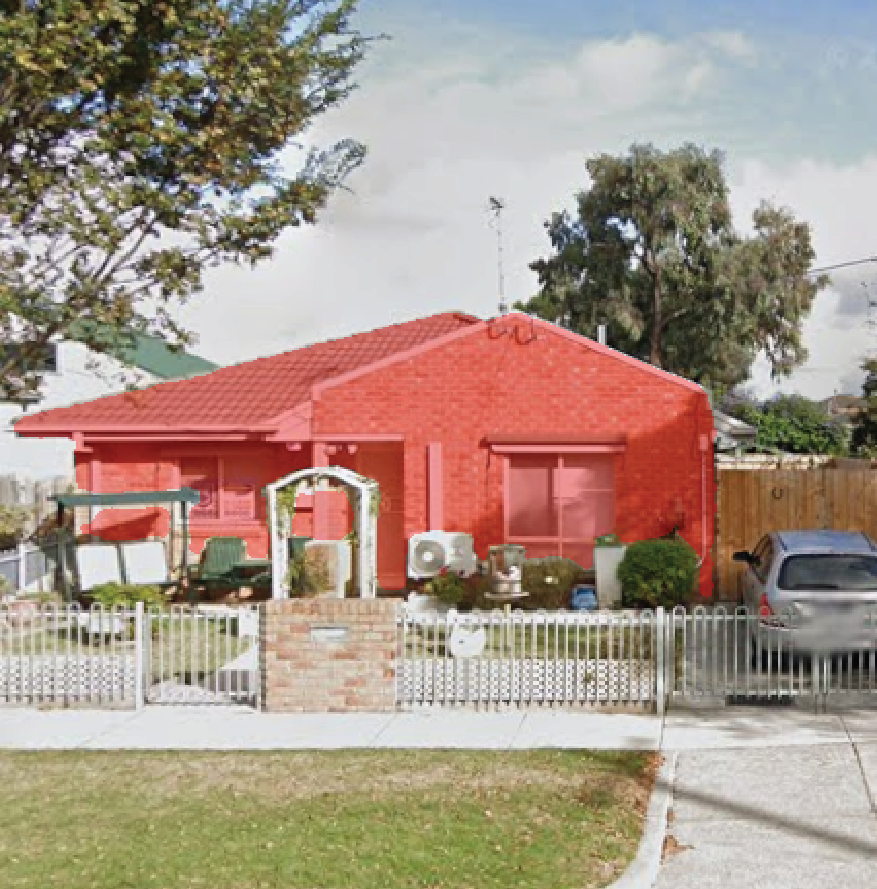
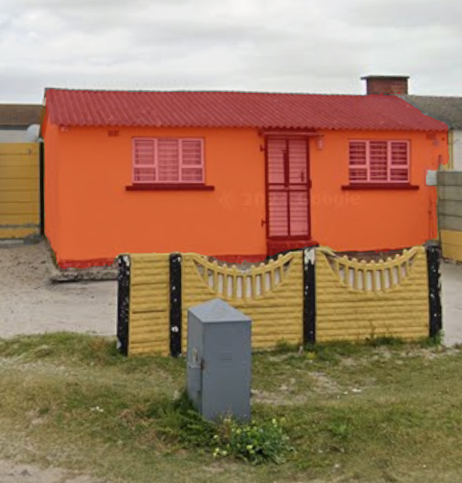

Research Partners

Funding and Programme
Interactive Explorer
Explore the 6 cities, compare and inspect the mapped results
Citation
Reference the paper
Street View Image Capture
~58k candidate street-view images retrieved across 6 cities
Building Identification Using Grounded-SAM
9,254 high-confidence facade images retained across 6 cities
Insights Generation Using GPT-4V
9,056 human-validated outputs across 6 cities
Rio de Janeiro

Facade Condition
Extensive deterioration, including peeling paint
Mumbai

Building Typology
Mixed-Use
Zurich

Historical Value Indicators
High; detailed masonry, ornate cornices, decorative quoins, elaborate balconies
San Francisco

Architectural Style
Victorian
Melbourne

Main Facade Material
Brick
Cape Town

Roof Type
Pitched Roof
Six Cities